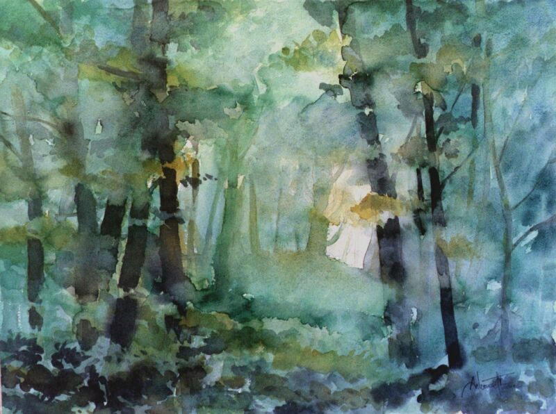
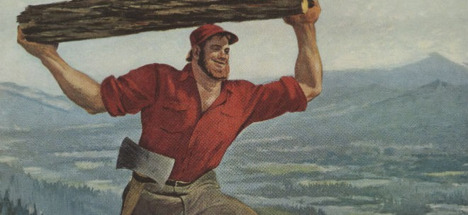

Você acaba de acordar e está deitado em um gramado. O dia está ensolarado, com poucas nuvens no céu e com uma leve brisa dançando pela paisagem. O silêncio do momento é quebrado por um grito de desespero.
Você avista algo que parece ser dois pequenos porcos furiosos em cima de um grande Lobo. Um dos porquinhos está furioso mordendo um dos braços do Lobo e o outro está, com um pedaço de madeira, espancando.
– Aaaaaaaah! – Grita o Lobo – Parem com isso! Eu não sei onde ele está! Faço nem ideia do que aconteceu!
– Eu já devia esperar que um dia algo assim iria acontecer. – Fala Heitor. – É nisso que dá confiar em alguém com “Mau” no nome. – E desfere mais um golpe.
Opções:

Os porcos, ainda mais enfurecidos, continuam com o violento acerto de contas.
– É bom que você não tenha feito Bacon do nosso irmão! – Fala Cícero sem deixar de morder o braço do Lobo – Se algo assim aconteceu, qualquer semelhança entre você e um Lobo será mera coincidência!
– E eu que ganho o nome de “Mau”? – Fala o Lobo, livrando-se dos porquinhos e corre em direção a floresta gritando:
– Me deixem em paz!.
Você pega o Lobo pelo rabo e o puxa para fora da confusão, se colocando entre ele e os porquinhos.
– O que está fazendo? – Fala Heitor apontando o bastão para o Lobo – Este Lobo não merece misericórdia alguma!
Cícero dá um passo à frente enraivecido e diz:
– Só pra você saber, este Lobo comeu nosso irmão com feijão. – Então deixa cair uma lágrima.
O Lobo geme de dor:
– Ai… Ai… Eu não sei de onde tiraram essa ideia! Eu não vejo seu irmão desde a última vez que encenamos nossa história. E caso vocês não saibam, eu sou vegetariano!
– Você é o único com título de “mau” por essas bandas. Como espera que acreditemos em você, que é justamente o vilão da nossa história? – Questiona Heitor.
– É, Zé Mané! – Arremata Cícero.
– Para provar a minha inocência nessa história, estou disposto a ir procurar pelo porco perdido. – Sugere o Lobo. – O que me dizem?
Você corre em direção a confusão e logo já está dando bofetadas no lobo.
– Oh não! Eles não param de aparecer! – Resmunga o Lobo enquanto apanha – Maldito dia que escolhi para fazer uma caminhada na campina!
– Até este forasteiro sabe que você é mau elemento, Lobo. – Fala Heitor – Diga logo o que fez com o nosso irmão!
– Eu não sei de nada! – Exclama o Lobo. Se livra do espancamento e corre em direção a floresta gritando:
– Me deixem em paz!
Os dois porquinhos, ainda bem irritados, se olham sem saber o que fazer.
– Forasteiro. – Anuncia Heitor com o Sarrafo na mão – Já que se intrometeu onde não era chamado, não vamos te dar opção de recusar. Vamos amarrar o Lobo e você vai procurar o nosso irmão junto com ele.
– Isso aí! – Cícero se empolga – E se não voltarem em cinco minutos, vamos atrás de vocês para terminar a surra!
– Mano… Cinco minutos não é o suficiente nem para construir a sua casa de palha… – Explica Heitor.
– Puxa vida! – Cícero se espanta – Então não tem como mesmo… Então… Vamos atrás de vocês se cansarmos de esperar! – Corrige o porquinho, satisfeito com a sua ameaça.
Heitor busca uma corda em sua cabana de madeira e, quando retorna, amarra as mãos do Lobo.
– Desculpe colocar você nessa… – Resmunga o Lobo para você – Mas tenho medo de pensar o que aconteceria comigo se eles continuassem me espancando. – Completa com um sorriso sem graça e quase sem dentes.
Você e o Lobo partem em direção a floresta próxima a campina. As árvores próximas umas das outras tornam a floresta escura.
A procura pelo porquinho perdido começa. Você e seu novo companheiro adentram a floresta. Há som de pássaros cantando e do balançar dos inúmeros galhos das altas árvores que se estendem por todos os lados. Sem nenhuma estrada para trilhar, vocês acabam andando sem uma direção certa.
Já se passou tempo o suficiente para você começar a sentir um certo cansaço e mesmo com o passar do tempo, o cenário parece não mudar.
– Espero que não se importe… – Fala o Lobo enquanto facilmente parte a corda que amarrava seus braços. – Essa coisa já estava começando a me machucar.
Opções:
– Eu não sou um “Lobo Mau”. – Anuncia o Lobo. – Este é apenas meu nome e meu papel nos contos. Eu não conseguiria fazer mal para seres tão indefesos como os Porquinhos… Quase indefesos… – Corrige o Lobo se divertindo com o que acabara de dizer.
Troncos cortados começam a fazer parte do cenário e ao longe ecoam sons de batidas.
– Deve ser o Lenhador! – Exclama o Lobo. – Ele conhece cada parte dessa floresta. Talvez ele tenha visto o Porquinho.
Você e o Lobo aceleram o passo em direção às batidas.
Não demora muito até encontrarem o Lenhador, um homem barbudo, de estatura média e entroncado, ele desfere o último golpe de machado na árvore e enquanto a árvore tomba o Lobo anuncia a chegada.
– Madeira! – Grita o Lobo.
– Ei Mau, meu velho! Fazendo muitas Maldades pela minha floresta? – Pergunta o Lenhador piscando o olho para o Lobo.
– Hehe… Não muitas… – Diz o Lobo tentando parecer que achou engraçado.
– Haha! E quem é o Garoto que está com você? – Questiona o Lenhador. – Por acaso é o seu pupilo de maldades? Hahaha!
– Não é bem isso… Na verdade este forasteiro está me ajudando a procurar o Prático. Viemos até aqui na esperança de você ter visto ele pela floresta. Ele sumiu recentemente e seus irmãos estão preocupados com ele. – Explica o Lobo.
– Eu estava apenas tomando coragem. Estava com medo de você se assustar. – Explica o Lobo com um sorriso sem graça.
Troncos cortados começam a fazer parte do cenário e ao longe ecoam sons de batidas.
– Deve ser o Lenhador! – Exclama o Lobo. – Ele conhece cada parte dessa floresta. Talvez ele tenha visto o Porquinho.
Você e o Lobo aceleram o passo em direção às batidas.
Não demora muito até encontrarem o Lenhador, um homem barbudo, de estatura média e entroncado, ele desfere o último golpe de machado na árvore e enquanto a árvore tomba o Lobo anuncia a chegada.
– Madeira! – Grita o Lobo.
– Ei Mau, meu velho! Fazendo muitas Maldades pela minha floresta? – Pergunta o Lenhador piscando o olho para o Lobo.
– Hehe… Não muitas… – Diz o Lobo tentando parecer que achou engraçado.
– Haha! E quem é o Garoto que está com você? – Questiona o Lenhador. – Por acaso é o seu pupilo de maldades? Hahaha!
– Não é bem isso… Na verdade este forasteiro está me ajudando a procurar o Prático. Viemos até aqui na esperança de você ter visto ele pela floresta. Ele sumiu recentemente e seus irmãos estão preocupados com ele. – Explica o Lobo.
– Não! Não! Não era essa impressão que eu queria causar! – O Lobo se desespera. – Eu não quero te fazer mal, e acredite, eu realmente me importo com o Porquinho perdido. Acredite em mim. – Suplica o Lobo com tristeza.
Troncos cortados começam a fazer parte do cenário e ao longe ecoam sons de batidas.
– Deve ser o Lenhador! – Exclama o Lobo. – Ele conhece cada parte dessa floresta. Talvez ele tenha visto o Porquinho.
Você e o Lobo aceleram o passo em direção às batidas.
Não demora muito até encontrarem o Lenhador, um homem barbudo, de estatura média e entroncado, ele desfere o último golpe de machado na árvore e enquanto a árvore tomba o Lobo anuncia a chegada.
– Madeira! – Grita o Lobo.
– Ei Mau, meu velho! Fazendo muitas Maldades pela minha floresta? – Pergunta o Lenhador piscando o olho para o Lobo.
– Hehe… Não muitas… – Diz o Lobo tentando parecer que achou engraçado.
– Haha! E quem é o Garoto que está com você? – Questiona o Lenhador. – Por acaso é o seu pupilo de maldades? Hahaha!
– Não é bem isso… Na verdade este forasteiro está me ajudando a procurar o Prático. Viemos até aqui na esperança de você ter visto ele pela floresta. Ele sumiu recentemente e seus irmãos estão preocupados com ele. – Explica o Lobo.
– Ora! Mas isso é de fato preocupante, não há muitas coisas pelas redondezas para atrair alguém por tanto tempo. – Diz o Lenhador coçando o queixo com o machado. – Eu não o vi, mas sei que ele adora roubar as tortas da vovó, quando ela as põe para esfriar na janela. Acho que seria uma boa ideia procurar por lá.
– Muito bem, meu amigo, vamos seguir seu conselho. Mando notícias assim que encontrar o Prático. – Diz o Lobo se despedindo.
– Claro! Avise-me assim que achar aquele porco arteiro. – Confirma o Lenhador.
Após algum tempo de caminhada, o dia começa a ficar nublado. A luminosidade dentro da floresta diminui bastante. Mais algum tempo caminhando e você pode notar pedaços de algo que parece uma torta no chão.
Opções:
– Hum… Isso é realmente interessante. – O Lobo pensa em voz alta. – E parece que à frente há mais pedaços, vamos ver onde dá.
Vocês dois seguem uma trilha de torta que os leva à uma parte mais densa e silenciosa da floresta, onde a visibilidade fica ainda pior. Não leva muito tempo até encontrarem uma bandeja com uma torta quase inteira.
– Okay… Isso é bem esquisito… – Comenta o Lobo.
Opções:
– Forasteiro, eu não sei de onde você vem… – Começa o Lobo. – Mas você parece ter costumes bem esquisitos. De qualquer forma você pode ter achado uma pista. Vamos seguir os pedaços e ver se conseguimos algo.
Vocês dois seguem uma trilha de torta que os leva à uma parte mais densa e silenciosa da floresta, onde a visibilidade fica ainda pior. Não leva muito tempo até encontrarem uma bandeja com uma torta quase inteira.
– Okay… Isso é bem esquisito… – Comenta o Lobo.
Opções:
– Não é disso que eu estou falando… – Explica o Lobo. – Estou falando de ter alguém desconhecido nos observando. – Conclui o Lobo com uma expressão séria.
Ao olhar para frente você se depara com uma silhueta estática, a luminosidade do local não lhe permite obter uma visão mais detalhada da figura que os observa de longe.
– Quem está ai?! – Grita o Lobo. – “Sabe alguma coisa sobre quem estava comendo essa torta?
Imediatamente a figura passa a correr no sentido contrário à vocês. O Lobo logo agarra você pelo braço e começa a correr atrás da figura desconhecida. A perseguição parece interminável, até que você e o, já ofegante, Lobo perdem a figura de vista. Não só a perdem de vista, como também se encontram completamente perdidos. Olhando em volta vocês acham um estranho objeto que se assemelha com uma picareta.
– É possível que o fujão tenha deixado isso cair. – Comenta o Lobo. – Vamos levar conosco. Acredito que esse “alguém” esteja envolvido no sumiço do Prático.
Mais à frente, você o Lobo encontram uma trilha de migalhas de pão.
– Parece que encontramos nosso próximo destino, Forasteiro. – Diz o Lobo com um sorriso de satisfação. – E será um destino bem doce, eu diria.
– Não é disso que eu est… O quê? Que tipo de torta é essa? – Questiona o Lobo perplexo – Mais importante do que isso: Eu estava falando de ter alguém desconhecido nos observando.
Ao olhar para frente você se depara com uma silhueta estática, a luminosidade do local não lhe permite obter uma visão mais detalhada da figura que os observa de longe.
– Quem está ai?! – Grita o Lobo. – “Sabe alguma coisa sobre quem estava comendo essa torta?
Imediatamente a figura passa a correr no sentido contrário à vocês. O Lobo logo agarra você pelo braço e começa a correr atrás da figura desconhecida. A perseguição parece interminável, até que você e o, já ofegante, Lobo perdem a figura de vista. Não só a perdem de vista, como também se encontram completamente perdidos. Olhando em volta vocês acham um estranho objeto que se assemelha com uma picareta.
– É possível que o fujão tenha deixado isso cair. – Comenta o Lobo. – Vamos levar conosco. Acredito que esse “alguém” esteja envolvido no sumiço do Prático.
Mais à frente, você o Lobo encontram uma trilha de migalhas de pão.
– Parece que encontramos nosso próximo destino, Forasteiro. – Diz o Lobo com um sorriso de satisfação. – E será um destino bem doce, eu diria.
A densa vegetação começa a se dissipar e dar lugar a uma calçada que você pode jurar ser de KitKats e que leva a entrada do mais doce e incrível chalé que você já viu. Um lindo jardim antecede a entrada. Nele há arbustos de algodão doces salpicados de mm’s como se fossem pitangueiras multicoloridas, além de cupcakes que parecem ter brotado de um chão que, se apostar, deve ser cacau em pó.
– Uau! Isso é realmente chocolate com amendoim. – Fala o Lobo extasiado e de boca cheia, colhendo mais mm’s de um dos arbustos.
O Lobo se recompõe, sacode os farelos da roupa e vocês seguem até a porta da casa (que se parece mais com uma barra de chocolate gigante).
Você bate na porta e duas crianças rechonchudas e lambuzadas de chocolate atendem. Cada uma com uma considerável quantidade de doces em cada mão.
– Oi Mau. – Falam em unissono.

– Imagino que você seja o João e você a Maria, certo? – Se certifica o Lobo.
As crianças acenam positivamente estranhando a pergunta.
– Bem… Eu só não lembrava de vocês serem assim… Tão… Roliços. – Fala o Lobo com a voz sumindo ao longo da frase, mas continua:
– De qualquer forma… Eu e este forasteiro estamos procurando o Prático. Vocês não viram ele ou qualquer coisa estranha passando por aqui?
– Certamente não. Nunca acontece nada de novo nesse lugar. – Fala Maria revirando os olhos.
– Aliás, como vocês vieram parar aqui tão longe procurando pelo Prático? – O João questiona curioso.
– Estamos procurando ele desde o início do dia. – Explica o Lobo. – Suspeitamos que ele tenha sido raptado. No meio da floresta, notamos que alguém estava nos observando e começamos a segui-lo, mas o
perdemos de vista. Então encontramos a trilha de pão que nos trouxe até aqui.
Maria fecha o semblante. Hesita por um instante e então fala:
– Fazem alguns dias que não vemos a Bruxa… ficamos tão entretidos comendo doces que não demos muita importância pra isso. - Suspira. – Será que ela está bem?
– Ela nunca sumiu por tanto tempo. Costumávamos encenar a história diariamente. – Diz João com a voz trêmula.
O Lobo intervém:
– Tá, olhem só: tenho algo aqui que pode ser uma pista. Encontramos no trajeto pra cá – e mostra a picareta. - Mas não temos montanhas por aqui, pra que raios alguém aqui precisa de um desses?
– Temos a torre da Rapunzel. – Sugere Maria.
– E tentar subir na torre com qualquer coisa que não seja o cabelo dela me parece bem suspeito. – João observa. – Mas sem uma picareta, essa escalada não vai lograr êxito, talvez isso nos dê tempo de chegarmos na torre antes que aconteça qualquer coisa com a Princesa.
– Eu conheço o caminho mais curto para chegarmos na torre. – Fala Maria, já se dirigindo a trilha.
E o quarteto adentra novamente a floresta.
Vocês avistam a torre da Rapunzel ao longe e notam que alguém está descendo dela. Você e o Lobo correm na frente pra ver quem é. Se aproximam um pouco mais e conseguem distinguir: a Rapunzel está descendo e usando o próprio cabelo como corda. Vocês chegam na torre no mesmo momento em que ela alcança o chão.
– Rápido, o Príncipe foi levado naquela direção! – Exclama Rapunzel exasperada, com uma mão, apontando a direção e, com a outra, puxando uma faca da cintura.
Logo chegam também João e Maria (quase pondo os pulmões pra fora), enquanto Rapunzel está cortando o cabelo com a faca.
– Não to entendendo mais nada. – Fala Maria com a respiração ofegante – Não era pra Rapunzel ter sido raptada?
Rapunzel termina de cortar o cabelo e consegue se desvencilhar da torre. Tenta correr na direção da trilha, mas o Lobo a impede lhe segurando.
– Eu estava na torre – começa ela impaciente – como sempre, e olhava pela janela, quando notei ao longe uma figura vestida de preto. Quando percebi que ela estava com o rosto encoberto me escondi e comecei a espiar. Ela segurava uma grande corda enrolada no ombro, acho que tinha a intenção de subir na torre, mas parecia procurar algo na bolsa que carregava. Então começou a se aproximar um som de cavalgada. Eu sabia que era o Príncipe chegando. Mas aquela figura também ouviu e se escondeu em uma moita. O Príncipe ao se aproximar da torre apeou. Então me debrucei sobre o parapeito da janela e gritei pra ele tomar cuidado e ele pareceu não ouvir, então gritei mais alto, mas antes que ele pudesse reagir a figura o golpeou na cabeça e ele caiu desmaiado. Do topo da torre eu não pude fazer nada a não ser assistir – Ela começa a chorar de raiva - ela o levou até o cavalo e então fugiu naquela direção.
João e Maria a abraçam, um de cada lado da princesa.
– Não lembro de já tê-la visto fora da torre. – Comenta o Lobo.
– Eu nunca precisei descer da torre. O Príncipe e minha madrasta sempre fizera tudo por mim.
- O que estamos esperando? - Questiona Rapunzel e já sai em direção a trilha.
o Lobo a detém outra vez e fala:
– Não vale a pena nos embretarmos na floresta sem rumo. Nossa figura misteriosa parece ter um roteiro em mente. Antes pensei que as vítimas fossem o foco, mas agora vejo que não. O plano inicial parecia ser subir na torre e levar a Rapunzel, mas essa ideia foi rapidamente substituída com a aparição do Príncipe e ele virou a vítima. Eu não consigo entender o motivo, mas está sendo levado um personagem de cada história: Primeiro foi a Bruxa, depois o Prático e, agora, o Príncipe.
– A última história é a da Chapeu! – Se adianta Maria.
– Mas o que nos garante que essa não foi a primeira? – João questiona.
– Ontem encenei e hoje, pela manhã, falei com o lenhador e parecia estar tudo bem. Posso estar enganado, mas acho que ainda temos uma chance. – Diz o Lobo, tentando parecer otimista.
– Finalmente podemos ir? – Pergunta Rapunzel impaciente.
Apressados, você e o Lobo chegam à casa da vovózinha. Escondidos pela parede da lateral da casa, os dois avistam uma jovem menina de capa e capuz vermelho a bater na porta da casa da vovó. Uma figura ofuscada pelas sombras das árvores ao redor da casa, se aproxima oscilante e lentamente atrás da menina.
– Essa não! – O lobo exclama e imediatamente corre na direção da menina.
– Mau! – Fala a menina surpresa e sorridente. – Você já está atrasado para o nosso conto.
– Não é isso, Chapéu! – Explica o Lobo. – Afaste-se daí! – O Lobo roga já puxando a menina para trás de sí.
– O que está acontecendo? – Chapéuzinho pergunta confusa.
O Lobo cerra os olhos, põem suas presas à mostra e rosna ferozmente para o vulto. A figura continua se aproximando até que as sombras já não mais à envolvem.
Você enxerga uma sorridente senhora com cabelos completamente brancos. Ela usa óculos, anda um pouco curvada e carrega consigo uma bolsa. O Lobo para de rosnar.
– Onde foi que eu deixei as chaves da casa? – Pergunta ela enquanto mexe dentro da bolsa.
– Vovó! – Exclama a alegre Chapéuzinho.
– Olá, minha netinha. – A velhinha sorri. – Ah! Achei a chave! Venham! Entrem! Vou preparar um lanchinho.